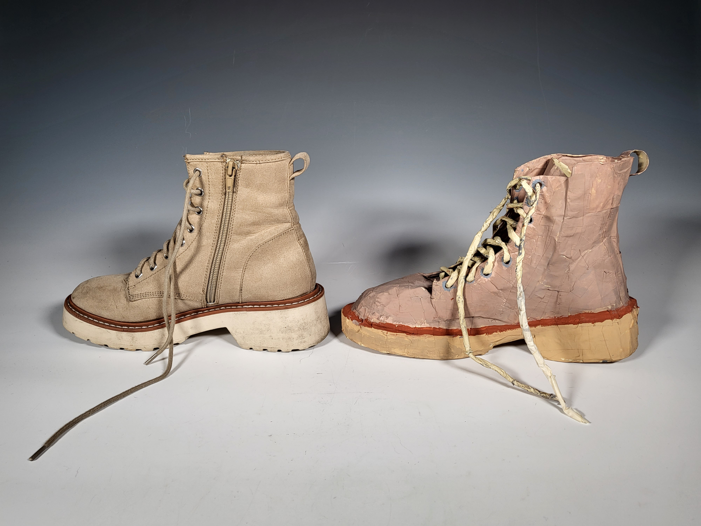
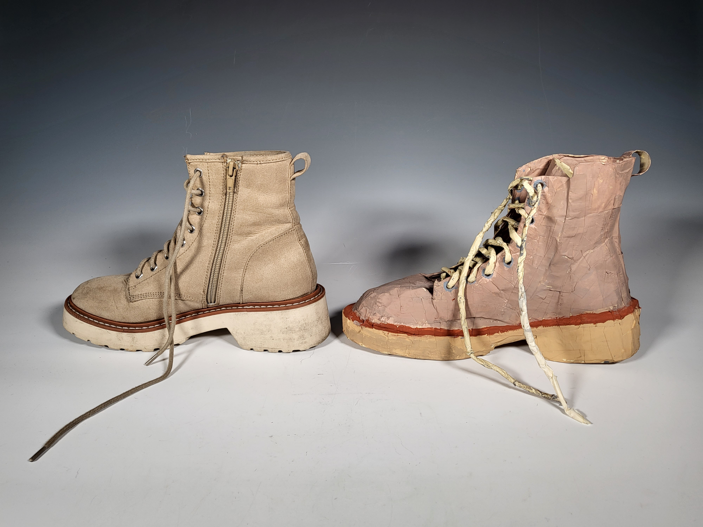

Both of these projects were completed in After Effects. More animation projects to come!
All of the art in this section is done in various mediums such as ink, charcoal, pen, and graphite. The replicated shoe that I made is only made of tape. The character design project was an assignment in which we had to reimagine a character from the Wizard of Oz. I made my character in the Procreate app.
 
